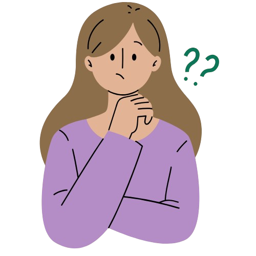

PREGUNTAS Y RESPUESTAS
¿Qué son las flores eternas? Son arreglos florales elaborados a mano con cintas de alta calidad, diseñados para durar toda la vida mientras mantienen su belleza y estilo únicos.
¿Qué materiales se utilizan para las flores eternas? Usamos cintas de alta calidad hechas de satén, organza y otros materiales resistentes para garantizar la durabilidad de las flores.
¿En qué ocasiones son ideales las flores eternas? Son perfectas para regalos, decoración del hogar, eventos especiales como bodas, aniversarios, cumpleaños, o cualquier ocasión donde desees regalar algo único y duradero..

2024 © Bunns Flowers